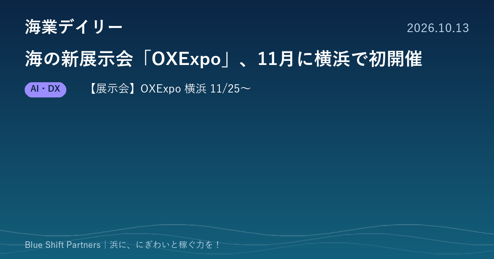

2026.10.13
海の新展示会「OXExpo」、11月に横浜で初開催

本日は、11月に横浜で初めて開かれる海洋産業の展示会を紹介します。海の先端技術やモビリティ、エネルギーの最新動向を一度に見られる場で、水産・漁業の関係者も来場の対象に含まれています。
【展示会】海洋産業の新展示会「OXExpo」が11月25・26日にパシフィコ横浜で初開催
インフォーマ マーケッツ ジャパン株式会社は、海洋分野の新しい展示会「OXExpo」を2026年11月25日（水）・26日（木）の2日間、パシフィコ横浜で初めて開催すると発表しました。先端技術、最新モビリティ、エネルギー開発の3分野に関連する計100社が出展し、シンポジウムやセミナーも行われます。後援は横浜市と海洋都市横浜うみ協議会で、「うみコン2026」が同時開催されます。来場には公式サイトでの事前登録が案内されています。
ここがポイント：主催者は想定する来場者の業種に水産・漁業を挙げています。漁協や自治体、浜の事業者が、海の先端技術やモビリティ、エネルギーの動きをまとめて情報収集し、異業種の企業とつながるきっかけに使えます。
出典：インフォーマ マーケッツ ジャパン株式会社「次世代の海洋産業を推進するOXExpoを初開催します」（PR TIMES）（2026-10-06）
海の展示会は、漁業の外にいる企業が浜に関心を向けている合図でもあります。新しい技術を「自分の浜で何に使えるか」という目で見て回ると、観光、加工、人手不足対策のヒントが見つかります。気になる出展社があれば、名刺交換から小さな実証を相談してみるのも一つの手です。